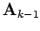
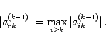
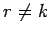

Inhalt Index DeskTop Bronstein

 Numerische Mathematik Numerische Lösung von Gleichungssystemen Lineare Gleichungssysteme Dreieckszerlegung einer Matrix
Numerische Mathematik Numerische Lösung von Gleichungssystemen Lineare Gleichungssysteme Dreieckszerlegung einer Matrix


Bei der Durchführung des k-ten Eliminationsschrittes kommt jedes von Null verschiedene Element ai1(k-1) der ersten Spalte der Matrix  als Pivot in Frage. Im Hinblick auf die Genauigkeit der berechneten Lösung sind jedoch die folgenden Strategien zweckmäßig.
|  | (19.33) |
Falls  ist, dann werden die r-te und die k-te Zeile vertauscht. Es läßt sich zeigen, daß durch diese Strategie die Fortpflanzung von Rundungsfehlern gedämpft wird.